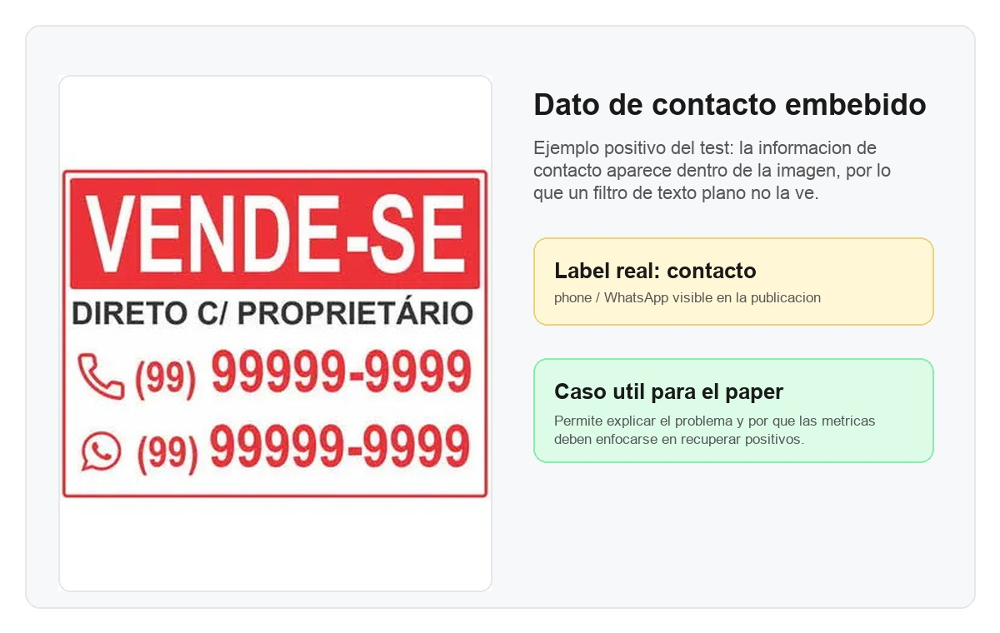
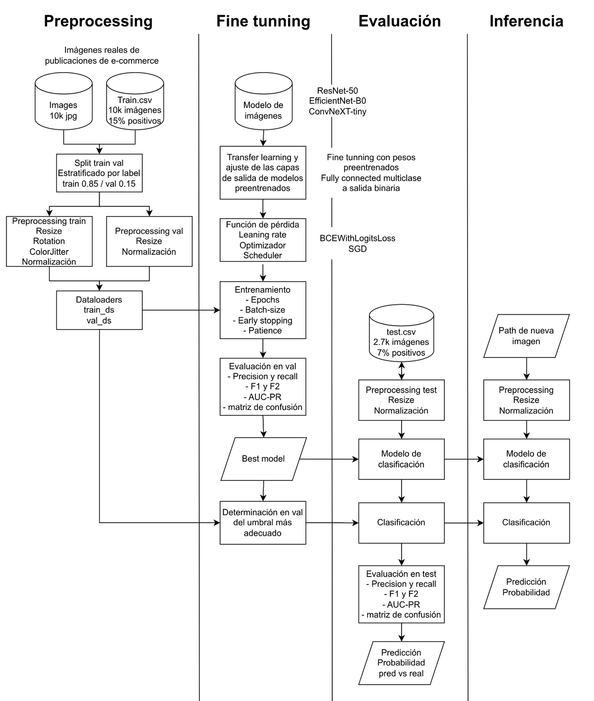
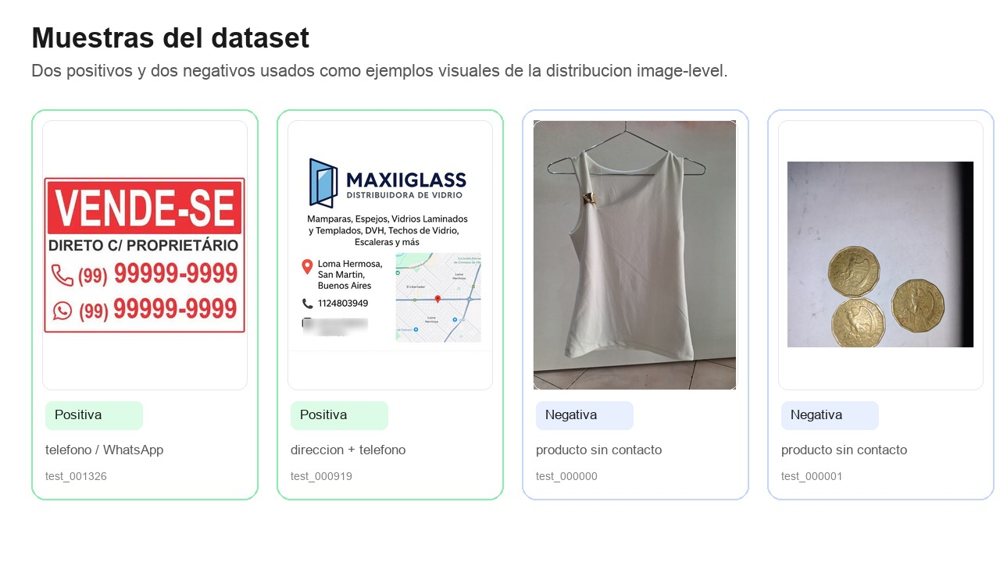
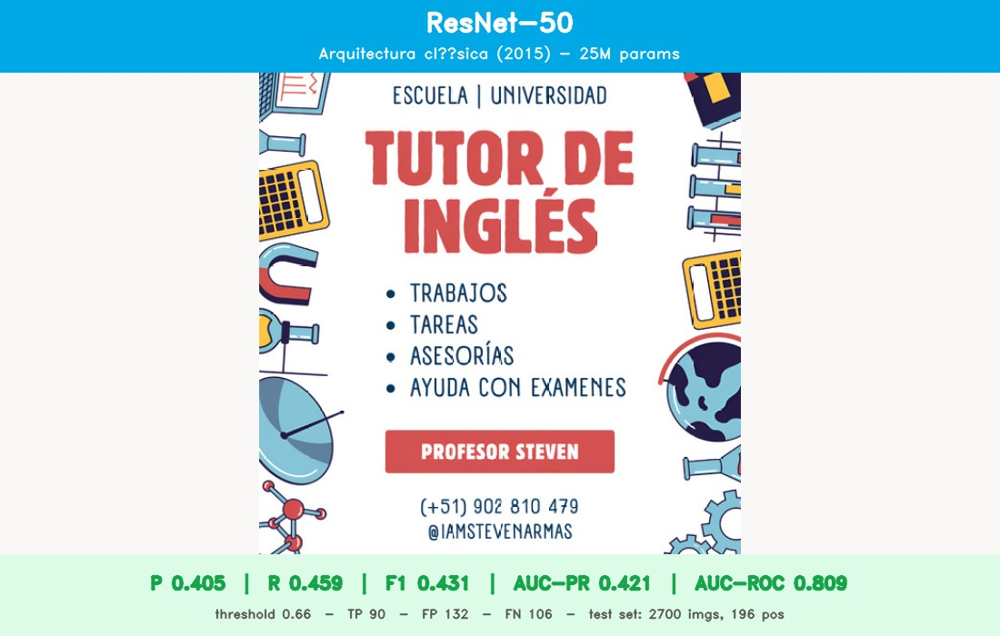
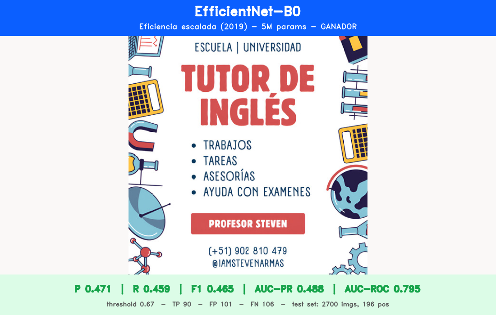
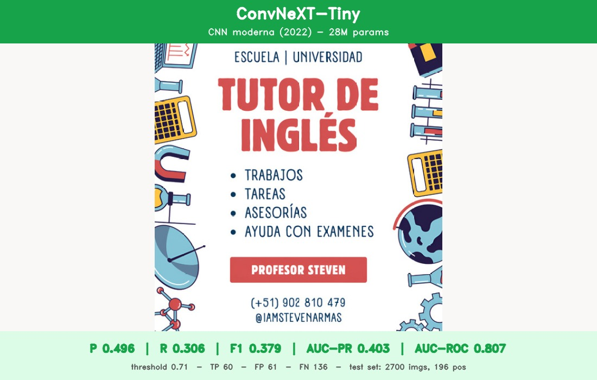

Técnicas de Visión Artificial para la Mitigación de
la Desintermediación en E-commerce
________________________________________________________________________________________________________________________________________
INTEGRANTES
Descripción conceptual del proyecto
El problema
La inclusión encubierta de datos de contacto en publicaciones de e-commerce (números de teléfono, redes sociales, direcciones físicas, URLs externas) permite abrir canales de comunicación no controlados entre vendedores fraudulentos y compradores.
Estas prácticas violan las políticas de las plataformas y buscan inducir al comprador a concretar transacciones fuera del sistema — eludiendo los mecanismos de protección al consumidor.
Una solución de visión por computadora que clasifique automáticamente cada imagen según contenga o no datos de contacto. Aplicamos deep learning con transfer learning sobre arquitecturas pre-entrenadas para identificar patrones visuales que los sistemas convencionales (filtros de texto plano) no logran detectar.

Apoyo a equipos de moderación de e-commerce para flagear publicaciones sospechosas antes de su publicación pública.
Diagrama general de funcionamiento

Descarga de imágenes desde URLs reales de e-commerce. Etiquetado manual asistido por IA. Split train / val 85/15, resize a 384×384, normalización con stats ImageNet, augmentation suave (rotation + ColorJitter — sin flip ni crop para no destruir texto).
3 arquitecturas pre-entrenadas: EfficientNet-B0, ResNet-50, ConvNeXT-Tiny. Cabeza FC reemplazada por salida binaria.
BCEWithLogitsLoss + SGD (menos agresivo que Adam para fine-tuning). Threshold óptimo calibrado sobre validación.
Test set con distribución natural intacta (7% positivos). Preprocesamiento idéntico a val (resize + normalización, sin augmentation). Cálculo de P, R, F1, AUC-PR, AUC-ROC con el threshold calibrado.
Función que recibe el path de una imagen → preprocesa → clasifica → devuelve JSON con
{image_path, prediction, probability}. Lista para integrarse en un pipeline de moderación.
Dataset y aspectos a evaluar
Composición del dataset
Imágenes obtenidas de publicaciones reales recientes. Etiquetado manual con soporte de IA (Claude Enterprise) para acelerar el proceso. El desbalance de train se compensa forzando casos positivos adicionales; el test mantiene la proporción natural (~7%) para evaluación realista.
Muestras representativas

Aspectos a evaluar sobre el modelo ganador
- Resize de imagen: 380×380 vs. 512×512 — trade-off entre detección de texto pequeño y costo de entrenamiento en Colab.
- Capas fully connected adicionales: sumar una 2ª FC entre backbone y salida.
- Learning rates: distintos valores y schedules para backbone y cabeza.
- Complementos: integrar OCR (sobre crops) o Class Activation Maps para localización.
- Métrica del scheduler:
val_lossvsAUC-PRcomo criterio de early stopping y reducción de LR.
ResNet-50 — Arquitectura clásica (2015)
Por qué lo probamos
Es la baseline clásica de la era moderna de CNNs: introdujo los residual connections que resolvieron el problema de degradación al apilar muchas capas. Sigue siendo el punto de referencia con el que se comparan arquitecturas más nuevas y tiene transfer learning extremadamente validado.
Características
- Backbone ResNet-50 pre-entrenado en ImageNet (~25M params)
- Input: imagen 384×384 normalizada con stats ImageNet
- Cabeza:
nn.Linear(2048, 1)reemplaza la FC original - Output: logit escalar → sigmoid → p(contacto)
- Bloques: bottleneck residual + BatchNorm + ReLU
Pipeline (4 etapas)
- Preprocesamiento: resize 384×384 + normalización ImageNet + augmentations (flip, rotation, color jitter)
- Forward: backbone ResNet-50 produce un vector de features de dim 2048
- Cabeza binaria:
Linear(2048, 1)→ logit → sigmoid → p(contacto) - Decisión: threshold calibrado en validación (0.66) → pred binario
Hiperparámetros
- 30 epochs (early stopping patience=5 sobre val_loss)
- Optimizer: SGD con LR escalonado — backbone 5e-4, cabeza 5e-3
- Loss:
BCEWithLogitsLossconpos_weight = √(neg/pos)
Input → Output

Resultados (test set)
Mejor AUC-ROC del grupo (0.809). Threshold óptimo: 0.66. Detecta 90/196 positivos.
EfficientNet-B0 — Eficiencia escalada (2019)
Por qué lo probamos
Familia de arquitecturas que balancea profundidad, ancho y resolución mediante compound scaling. La variante B0 logra la mejor relación accuracy/parámetros de su época, con ~5M params (vs 25M de ResNet-50) — ideal para deploy real en moderación a gran escala.
Características
- Backbone EfficientNet-B0 pre-entrenado en ImageNet (~5M params)
- Input: imagen 384×384 normalizada con stats ImageNet
- Cabeza:
model.classifier[1] = nn.Linear(in, 1) - Output: logit escalar → sigmoid → p(contacto)
- Bloques: MBConv depthwise separable + SE attention
Pipeline (4 etapas)
- Preprocesamiento: resize 384×384 + normalización ImageNet + augmentations (flip, rotation, color jitter)
- Forward: backbone EfficientNet-B0 produce vector de features de dim 1280
- Cabeza binaria:
Linear(1280, 1)→ logit → sigmoid → p(contacto) - Decisión: threshold calibrado en validación (0.67) → pred binario
Hiperparámetros
- 30 epochs (early stopping patience=5 sobre val_loss)
- Optimizer: SGD con LR escalonado — features 5e-4, classifier 5e-3
- Loss:
BCEWithLogitsLossconpos_weight = √(neg/pos)
Input → Output

Resultados (test set)
★ Mejor F1 y AUC-PR del grupo. Threshold óptimo: 0.67. Detecta 90/196 positivos con menos falsos positivos que ResNet-50.
ConvNeXT-Tiny — CNN moderna inspirada en Transformers (2022)
Por qué lo probamos
Es una reformulación moderna de las CNNs que incorpora ideas de Vision Transformers (kernels grandes 7×7, LayerNorm, GELU, depthwise separable convs) y matchea o supera a Swin Transformer con menor latencia. Lo probamos para ver si las mejoras arquitectónicas recientes se traducen en mejoras sobre nuestro caso de uso.
Características
- Backbone ConvNeXT-Tiny pre-entrenado en ImageNet (~28M params)
- Input: imagen 384×384 normalizada con stats ImageNet
- Cabeza:
model.classifier[2] = nn.Linear(in, 1) - Output: logit escalar → sigmoid → p(contacto)
- Bloques: depthwise conv 7×7 + LayerNorm + GELU + inverted bottleneck
Pipeline (4 etapas)
- Preprocesamiento: resize 384×384 + normalización ImageNet + augmentations
- Forward: backbone ConvNeXT-Tiny produce vector de features de dim 768
- Cabeza binaria:
Linear(768, 1)→ logit → sigmoid → p(contacto) - Decisión: threshold calibrado en validación (0.71) → pred binario
Hiperparámetros
- 30 epochs (early stopping patience=5 sobre val_loss)
- Optimizer: SGD con LR escalonado — features 5e-4, classifier 5e-3
- Loss:
BCEWithLogitsLossconpos_weight = √(neg/pos)
Input → Output

Resultados (test set)
Mejor precisión del grupo (0.496) pero recall bajo: solo detecta 60/196 positivos. Threshold 0.71 demasiado conservador.
Por qué elegimos EfficientNet-B0
Cómo funciona
- Backbone EfficientNet-B0 pre-entrenado en ImageNet extrae features visuales de la imagen completa (vector dim 1280).
- Cabeza binaria (
Linear(1280, 1)) produce un logit escalar. - Sigmoid convierte el logit en probabilidad p(contacto) ∈ [0, 1].
- Threshold 0.67 calibrado en validación decide si la publicación debe ser marcada para revisión.
Criterio de selección
El test set tiene 196 positivos sobre 2.700 imágenes (~7.3%). Como la clase positiva es escasa y perder contactos reales es costoso (false negatives = publicaciones evadiendo política), priorizamos F1 (balance P/R) y AUC-PR (ranking robusto al desbalance). EfficientNet-B0 lidera ambas.
Justificación frente a los otros enfoques
Mismo recall (90/196 positivos detectados) pero EfficientNet-B0 logra 31 falsos positivos menos (101 vs 132). Resultado: mayor precisión (0.471 vs 0.405), mejor F1 (0.465 vs 0.431) y mejor AUC-PR (0.488 vs 0.421) — todo con 5× menos parámetros.
ConvNeXT tiene mejor precisión puntual (0.496) pero su threshold óptimo es demasiado conservador: solo detecta 60/196 positivos (recall 0.306). EfficientNet-B0 atrapa 30 positivos más, con apenas 40 falsos positivos más — claramente preferible para moderación.
~5M parámetros vs ~25M (ResNet-50) y ~28M (ConvNeXT-Tiny). Menor latencia y menor consumo de memoria — crítico para deploy a escala en moderación de e-commerce.
Mejor F1 (0.465), mejor AUC-PR (0.488), mejor balance precision/recall y menor tamaño del modelo.
Resultados comparativos y elección final
Resumen
Mejor F1 (0.465), mejor AUC-PR (0.488). Combina alto recall (0.459) con la mayor precisión entre los que detectan ≥90 positivos. Solo ~5M parámetros.
Mismo recall que el ganador (90/196 positivos), pero con 31 falsos positivos más. Mejor AUC-ROC del grupo (0.809). Arquitectura clásica que sigue siendo competitiva.
Mejor precisión (0.496) pero solo 60/196 positivos detectados. Threshold óptimo demasiado alto. Útil si el costo de falsos positivos fuera prohibitivo.
Tabla comparativa
| Modelo | Precision | Recall | F1 | AUC-PR | AUC-ROC |
|---|---|---|---|---|---|
| EfficientNet-B0 | 0.471 | 0.459 | 0.465 | 0.488 | 0.795 |
| ResNet-50 | 0.405 | 0.459 | 0.431 | 0.421 | 0.809 |
| ConvNeXT-Tiny | 0.496 | 0.306 | 0.379 | 0.403 | 0.807 |
★ = modelo elegido. Métricas a nivel imagen sobre el mismo test set: 2.700 imágenes, 196 positivas (~7.3%). Threshold por modelo calibrado en validación interna.
Comparación visual
Bar chart interactivo (Chart.js) renderizado desde CHART_DATA al final del HTML.
Muchas Gracias